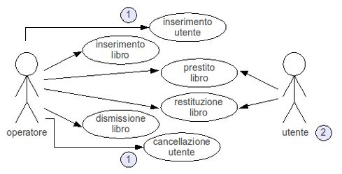
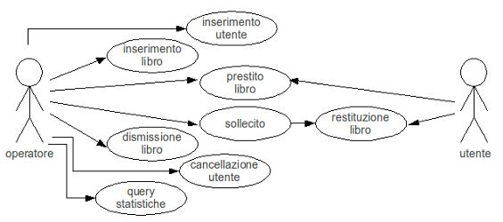
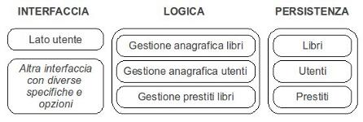
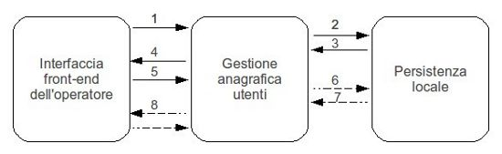
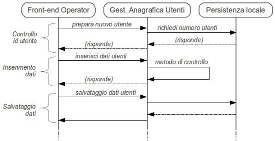

Torna alla pagina di Ingegneria del Software
:: Ingegneria del Software - Appunti del 30 Marzo 2009 ::
Consideriamo come caso di studio il sistema informativo di una biblioteca.
A quali esigenze dovrà rispondere il software che lo gestisce? Con quali entità dovrà avere a che fare?
Proviamo a redarne un primo caso d'uso:

Facendo riferimento ai numeri cerchiati, osserveremo che:
- è utile scrivere per prime le attività che corrispondono alla fase di creazione e cancellazione di un oggetto (nascita e morte). Nota di folklore: il termine tecnico per indicare l'inserimento di un oggetto è accessione
- si potrebbe prevedere che l'utente riesca a svolgere personalmente le attività di prestito e restituzione grazie a sistemi automatizzati.
Notare che in questo caso d'uso l'utente non è solo fruitore dei servizi, ma è anche oggetto di attenzione del sistema dal momento che andrà gestita anche la sua anagrafica.
Sono possibili dei raffinamenti a questo caso d'uso? Certamente:

I raffinamenti potrebbero andare avanti ancora un bel po', ed è compito dell' analista tradurre i requisiti in informazioni ed altri vincoli da passare al designer (o progettista). Questi persegue la separazione delle responsabilità: l' interfaccia deve essere distinta dalla logica, che deve a sua volta essere distinta dalla gestione della persistenza (in genere un database). Questi sono i tre componenti essenziali che costituiscono un software, e che applicati al nostro caso di studio devono essere interpretati come:
- interfaccia: interfaccia front-end per il bibliotecario ed eventualmente per l'utente che consulta i libri presenti in biblioteca
- logica: che contiene le istruzioni sul come gestire la biblioteca (libri, utenti, prestiti, ...)
- gestione della persistenza: il database che contiene tutti i dati su libri, utenti e movimenti
Facciamo uno schema:

Alcune osservazioni:
- i componenti non devono essere per forza unici, ma possono essercene più di uno. Nel nostro caso ad esempio abbiamo due interfacce e tre database
- la seconda interfaccia potrebbe essere ad esempio un dispositivo di lettura di codici a barre
- la parte di logica è divisa in gestione anagrafica dei libri, degli utenti e dei prestiti. E' bene tenerle separate perché in questo modo posso prendere e utilizzare dei metodi di gestione già fatti per altre
- potrei introdurre una suddivisione più efficiente dei database distinguendo tra persistenze remote (ad esempio quelle consultate da casa dall'utente) e quelle locali (quelle con cui avrà usualmente a che fare l'operatore)
Questo schema è solo una bozza di un diagramma di collaborazione, che nella sua versione definitiva dovrà mostrare le interazioni che avvengono tra gli oggetti che partecipano a una situazione specifica. Consideriamo come situazione l'inserimento di un utente nel sistema e chiediamoci quali sono i componenti coinvolti:
- l'operatore agirà attraverso la sua interfaccia front end, e dovrà dire alla logica di gestione anagrafica utenti di prepararne uno nuovo
- la logica chiederà alla persistenza locale qual è il numero di utenti inseriti finora
- la persistenza restituirà il valore così che la logica possa incrementarlo di uno
- la logica farà sapere all'operatore tramite l'interfaccia che può iniziare a scrivere i dati
- i dati saranno passati... eccetera eccetera
- ...
Rappresentiamo il tutto in un diagramma di collaborazione, in cui i messaggi inviati da un componente all'altro sono rappresentati da frecce con etichette che ne spiegano la funzione (nome, parametri, sequenza del messaggio).

Dal diagramma di collaborazione possiamo agilmente ricavare il diagramma di sequenza, che mostra come avviene lo scambio di messaggi tra componenti enfatizzandone l'aspetto temporale. Nei diagrammi di sequenza gli oggetti sono rappresentati con linee verticali tratteggiate, con il nome del componente in cima. Anche l'asse temporale è verticale, e per convenzione aumenta muovendoci verso il basso.

Il designer può semplificare ulteriormente il lavoro dello sviluppatore fornendogli, oltre ai due diagrammi che abbiamo visto e ai casi d'uso, l'insieme delle chiamate (quindi dei servizi richiesti) che devono essere gestite da ogni componente, suddivise per componente stesso. In questo modo si va a formare il cosiddetto diagramma di classe, che gode di una grammatica molto ricca ed è uno strumento rappresentativo molto potente per lo sviluppatore. Mostriamo ad esempio parte del diagramma di classe del gestore di anagrafica utente:
Notare che per passare dal diagramma di collaborazione (o di sequenza) a quello di classe è sufficiente trascrivere tutti quei metodi che hanno frecce entranti nel componente, escludendo beninteso quelle di risposta.
Concludiamo la lezione citando un altro tipo di documentazione utile, ovvero i casi di test, che a fronte dell'inserimento di un certo input mostrano i vari output attesi. Più che per il designer, queste informazioni sono utilissime per lo sviluppatore e per gli operatori che fanno da tester.
Torna alla pagina di Ingegneria del Software